深入理解计算机系统 CSAPP
20201221-
从hello.c源文件 到 hello 可执行文件过程
// hello.c
#include <stdio.h>
int main()
{
printf("hello, world\n");
return 0;
}
linux>gcc -Og -o hello hello.c ## -0g 表示优化等级(生成符合原始C代码整体结构的机器代码的优化等级)，还有-O1 -O2
执行这个命令，gcc编译器读取源文件hello.c并将它翻译成一个可执行目标文件hello过程:
预处理阶段预处理器(cpp)根据以字符#开头的命令，修改原始的C程序。比如hello.c中第一行的#include命令告诉预处理器读取系统头文件stdio.h的内容，并把它直接插入程序文本中；并扩展所有用#define声明指定的宏，结果就得到了另一个C程序，通常是以.i作为文件扩展名 编译阶段编译器(ccl)将文本文件hello.i文件翻译成文本文件hello.s，它包含一个汇编语言程序，程序里面的低级机器语言指令。函数main的定义如下main subq $8,%rsp movl $.LCO,%edi call puts movl $0,%eax addq $8,%rsp ret汇编阶段汇编器(as)将hello.s翻译成机器语言指令，把这些指令打包成一种叫可重定位目标程序(relocatable object program)的格式，并将结果保存在目标文件hello.o中。hello.o是一个二进制文件，它包含的17个字节是函数main的指令编码链接阶段hello程序调用了printf函数，他是每个c编译器都提供的标准C库中的一个函数。printf函数存在于一个名为printf.o的单独的预编译号的目标文件中，而这个文件必须以某种方式合并到我们的hello.o程序中。链接器(ld)就负责这种合并。结果就得到hello文件，他是一个可执行目标文件(简称可执行文件)，可以被加载到内存中，由系统执行
操作系统
操作系统的两个基本功能
- 防止硬件被时空的应用程序滥用
- 向应用程序提供简单一致的机制来控制复杂而又通常大不相同的低级硬件设备
操作系统通过几个基本的抽象概念(进程、虚拟内存和文件)来实现这两个功能
文件是对I/O设备的抽象表示
虚拟内存是对主存和磁盘I/O设备的抽象表示
进程是对处理器、主存和I/O设备的抽象表示
Amdahl定律
第一章问题解答
Told = 2500/100 = 25
Tnew = (2500-1500)/100 + 1500/150 = 10+10 = 20
25/20 = 1.25
25/(10 + 1500/x) = 1.67
10+1500/x = 14.97
1500/x=4.97
x=300
1/((1-0.8) + 0.8/k) = 2
0.5=0.2+0.8/k
0.8/k = 0.3
k = 2.67
数字表示
无符号(unsigned)编码基于传统的二进制表示法，表示大于或等于0的数字
补码(two's--complement)编码是表示有符号整数的最常见的方式，有符号整数就是可以为正或为负的数字
浮点数(floating-point)编码是表示实数的科学计数法的以2为基数的版本
由于表示的精度优先，浮点运算时不可结合的。例如在大多数机器上，C表达式
(3.14+1e20)-1e20的值会是0.0，而
3.14+(1e20-1e20)的值会是3.14. 整数预算和浮点数运算会有不同的数学属性是因为他们处理数字表示有限性的方式不同:
整数的表示虽然只能编码一个相对娇小的数值方位，但这种表示是精确的
浮点数虽然可以编码一个较大的数值方位，但这种表示只是近似的
大端法 小端法
逻辑右移:在左端补k个0
算数右移:在左端补k个最高有效位的值
C语音没明确定义有符号数应该使用哪种类型的右移
但几乎所有的编译器对有符号数使用算数右移，对无符号数，使用逻辑右移
java明确定义了， x>>K(将x算数右移k个位置) x>>>k(将x逻辑右移k个位置)C语言标准没有指定有符号数要采用某种表示，但是几乎所有机器都默认采用补码，通常大多数数字都默认认为是有符号的。
x=12345 或 y=0x1A2B, 这两个值就被认为是有符号的
x=12345U 或 y=0x1A2Bu, 这两个值就被认为是无符号的。 加上后缀字符'U'或'u'
| 符号 | 全称 | 含义 |
|---|---|---|
| B2Tw | Binary to Two's-complement | 二进制转补码 |
| B2Uw | Binary to Unsigned | 二进制转无符号数 |
| U2Bw | 无符号数转二进制 | |
| U2Tw | 无符号转补码 | |
| T2Bw | 补码转二进制 | |
| T2Uw | 补码转无符号数 | |
| TMinw | 最小补码值 | |
| TMaxw | 最大补码值 | |
| UMaxw | 最大无符号数 |
原码: sing-magnitude
反码: one's-complement
补码: two's-complement


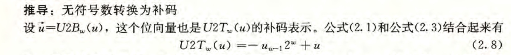


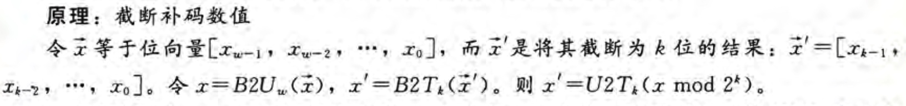


乘法 除法
在大多数机器上
整数乘法需要10个或更多的时钟周期， Inter Core i7 Haswell 上整数乘法需要3个时钟周期
整数除法需要30个或更多的时钟周期
故乘法转为 位移(左移)、加法、减法组合代替(编译器优化)
例如: x*14 14 = 23 + 22 + 21 故 x*14 = (x<<3)+(x<<2)+(x<<1)
除法转为 位移(右移)、加法、减法组合代替(编译器优化)
浮点数
IEEE浮点数标准 下面形式来表示一个数
V=(-1)s *M * 2E
| 标志 | 说明 |
|---|---|
| 符号(sign) | s决定这数是负数(s=1)还是正数(s=0)，而这对于数值0的符号位解释做特殊处理 |
| 尾数(significand) | M是一个二进制小数，它的范围是 1~2-e,或 0~1-e |
| 阶码(exponent) | E的作用是对浮点数加权，这个权重是2的E次幂(可能是负数) |
将浮点数的位表示划分为3个字段，分别对这些值进行编码:
- 一个单独的符号位s直接编码符号s
- k位的阶码字段 exp=e(k-1)......e1e0 编码阶码E
- n为小数字段 frac=f(n01)......f1f0 编码尾数M，但是编码出来的值也依赖与阶码字段的值是否等于0
gcc
// mstore.c
long mult2(long, long)
void multstore(long x, long y, long *dest) {
long t = mult2(x, y)
*dest = t;
}
终端执行
gcc -Og -S mstore.cgcc运行编译器，产生 ATT(根据AT&T命名) 格式的汇编代码汇编文件 mstore.s，但不做其他进一步工作(通常情况，他还会继续调用汇编器生成目标代码文件)，vi mstore.s截图如下(所有已 . 开头的行都是指导汇编器和链接器工作的伪指令，通常忽略掉) (gcc -Og -S -masm=intel mstore.cgcc将产生Intel格式的代码)
gcc -Og -c mstore.cgcc会变异并汇编该代码，产生目标代码文件 mstore.o，文件里是字节序列，对应一些列指令的编码，vi mstore.o截图如下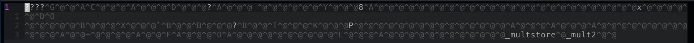
objdump -d mstore.o反汇编器(objdump -d可以充当反汇编器) mstore.o文件，并输出到屏幕(如下图，左边是指令，右边是等价的汇编意愿)为mstore.c 添加一个 main.c 主函数，代码如下
// main.c #include <stdio.h> void multstore(long , long, long *); int main() { long d; multstore(2, 3, &d); printf("2 * 3 --> %ld\n", d); return 0; } long mult2(long a, long b) { long s = a * b; return s; }gcc -Og -o prog main.c mstore.c编译main.c mstore.c，产生可执行文件 prog，反汇编prog，结果如下图
对面 mstore.o 和 prog 反汇编出来的，主要区别
- prog左边列出的地址不同：连接器将这段代码的地址移到了一段不同的地址范围中
- prog中链接器天数了callq指令调用函数mult2需要使用的地址：链接器的任务之一就是为函数调用找到匹配的函数的可执行代码的位置
- prog最后多了 nop 指令：这指令对程序没有影响，因为他们出现在返回指令
retq后面，插入这个指令是为了使函数代码变为16字节的整数倍，使得就存储器系统性能而言，能更好的放置下一个代码块
1
在c程序中插入汇编代码的方法(注这些汇编代码与某类特殊机器(例如x86-64)有关,所以只应该在想要的特性只能以此种方式才能访问到时才使用它):
- 编写完整的函数，放进一个独立的汇编代码文件中，让汇编器和链接器把它和用C语言书写的代码合并起来
- 使用GCC的内联汇编特性。用asm伪指令可以在c程序中包含简短的汇编代码，这种方法好处是减少了与机器相关的代码量
数据格式
Inter用术语
"字(word)":表示16位数据类型
"双字(double worlds)":表示32位数据类型
"四字(quad worlds)":表示64位数据类型
| C声明 | Intel数据类型 | 汇编代码后缀 | 大小(字节) |
|---|---|---|---|
| char | 字节 | b | 1 |
| short | 字 | w | 2 |
| int | 双字 | l | 4 |
| long | 四字 | q | 8 |
| char* | 四字 | q | 8 |
| float | 单精度 | s | 4 |
| double | 双精度 | l | 8 |
大多数gcc生成的汇编代码指令都有一个字符的后缀，表明操作数的大小:
movb(传送字节)
movw(传送字)
movl(传送双字) !!!
movq(传送四字)
注:::
l表示双字，因为32位数被看做长字(long word).
l也表示双精度浮点数，这两个不会产生歧义，因为浮点数使用的是一组完全不同的指令和寄存器
16个寄存器
一个x86-64的cpu办好一组16个存储64位值的通用目的寄存器(用来存储证书数据和指针)，名字都是以%r开头
- 8086时，有8个16位的寄存器，即%ax到%bp
- IA32时，寄存器从16位扩展成32位，标号从%eax到%ebp
- x86-64时，寄存器从32位扩张到64位，标号从%rax到%rbp
操作数指示符
大多数指令有一个或多个操作数，指示出执行一个操作中要使用的源数据，以及放置结果的目的位置
x86-64支持多种操作数格式
操作数可被分成3中类型:
- 立即数(immediate):用来表示常数值。 ATT格式的汇编代码中，书写方式是$后跟一个C语言表示的整数，例如$0x1F
- 寄存器(register):表示某个寄存器的内容。16个寄存器的低位1字节、2字节、4字节或8字节中的一个作为操作数，用ra表示任意寄存器a，用引用R[ra]来表示它的值，这时将寄存器集合看成一个数组R，用寄存器标识符作为索引
内存引用:根据计算出来的地址(通常称为有效地址)访问某个内存位置，用符号Mb[Addr]表示对存储在内存中从地址Addr开始的b个字节值的引用，为了简便，通常省去下标b
数据传送指令 mov
| 指令 | 效果 | 描述 |
|---|---|---|
| MOV S,D | D<-S | 传送 |
| movb | 传送字节 | |
| movw | 传送字 | |
| movl | 传送双字 | |
| movq | 传送四字 | |
| movabsq I,R | R<-I | 传送绝对的四字 |
将娇小的源值复制到较大的目的时使用
MOVZ: 把目的中剩余的字节填充为0
MOVS: 通过符号扩展来填充，把源操作的最高位进行复制
| 指令 | 效果 | 描述 |
|---|---|---|
| MOVZ S,R | R<-零扩展(S) | 以零扩展进行传送 |
| movzbw | 将做了零扩展的字节传送到字 | |
| movzbl | 将做了零扩展的字节传送到双字 | |
| movzwl | 将做了零扩展的字传送到双字 | |
| movzbq | 将做了零扩展的字节传送到四字 | |
| movzwq | 将做了零扩展的字传送到四字 |
| 指令 | 效果 | 描述 |
|---|---|---|
| MOVS S,R | R<-符号扩展(S) | 以符号扩展进行传送 |
| movsbw | 将做了符号扩展的字节传送到字 | |
| movsbl | 将做了符号扩展的字节传送到双字 | |
| movswl | 将做了符号扩展的字传送到双字 | |
| movsbq | 将做了符号扩展的字节传送到四字 | |
| movswq | 将做了符号扩展的字传送到四字 | |
| movslq | 将做了符号扩展的双字传送到四字 | |
| cltq | %rax<-符号扩展(%eax) | 把%eax符号扩展到%rax |
条件跳转指令
| 指令 | 同义名 | 传送条件 | 描述 |
|---|---|---|---|
| cmove S,R | cmovz | ZF | 相等/零 |
| cmovne S,R | cmovnz | ~ZF | 不相等/非零 |
| cmovs S,R | SF | 负数 | |
| cmovns S,R | ~SF | 非负数 | |
| cmovg S,R | cmovnle | ~(SF^OF)&~ZF | 大于(有符号>) |
| cmovge S,R | cmovnl | ~(SF^OF) | 大于或等于(有符号>=) |
| cmovl S,R | cmovnge | SF^OF | 小于(有符号<) |
| cmovle S,R | cmovng | (SF^OF)|ZF | 小于或等于(有符号<=) |
| cmova S,R | cmovnbe | ~CF&~ZF | 超过(无符号>) |
| cmovae S,R | cmovnb | ~CF | 超过或相等(无符号>=) |
| cmovb S,R | cmovnae | CF | 低于(无符号<) |
| cmovbe S,R | cmovna | CF | ZF |
分支控制
基于
条件数据传送代码性能好- 优点:性能好。原因是处理器通过
流水线获得高性能，在流水线中，一条指令的处理需经过一些列阶段，每个阶段执行所需操作的一小部分(如从内存读取指令、确认指令类型、从内存读取数据、执行算术运算、向内存写数据，以及更新程序计数器)。这种方法通过重叠连续指令的步骤来获得高性能。 例如，在读取一条指令的同时，执行它前面一条指令的算术运算。 缺点:(但在实际运行中，不一定很适用)
- 可能导致空指针
- 由于要计算两个分支的表达式，若表达式计算复杂时候，耗时更长
- 优点:性能好。原因是处理器通过
基于
条件控制转移
总的来说: 条件数据传送提供了一种用条件控制转移来实现条件操作的替代策略。它们只能用于非常受限制的情况，但这些情况还是相当常见的，而且与现代处理器的允许方式更契合
// 原始代码
v = test-expr ? then-expr : else-expr
// 条件控制转移 方法编译结果如下:
if (!test-expr)
goto false;
v = then-expr;
goto done;
false:
v = else-expr;
done:
// 条件数据传送 方法编译结果如下:
v = then-expr;
ve = else-expr;
t = test-expr;
if(!t) v = ve;
循环
// c语言 do-while 循环
do
body-statement
while(test-expr);
// 翻译成goto
loop:
body-statement
t = test-expr;
if(t)
goto loop;
// c语言 while 循环
while(test-expr)
body-statement
// 翻译成goto 第一种翻译方法: 跳转到中间(jump to middle)
goto test;
loop:
body-statement
test:
t = test-expr;
if (t)
goto loop;
// 翻译成goto 第二种翻译方法: guarded-do 变成do-while循环
/////////////// do-while 写法begin
t = test-expr;
if(!t)
goto done;
do
body-statement
while(test-expr);
done:
/////////////// do-while 写法end
/////////////// goto begin
t = test-expr;
if(!t)
goto done;
loop:
body-statuement
t = test-expr;
if(t)
goto loop;
done：
/////////////// goto end
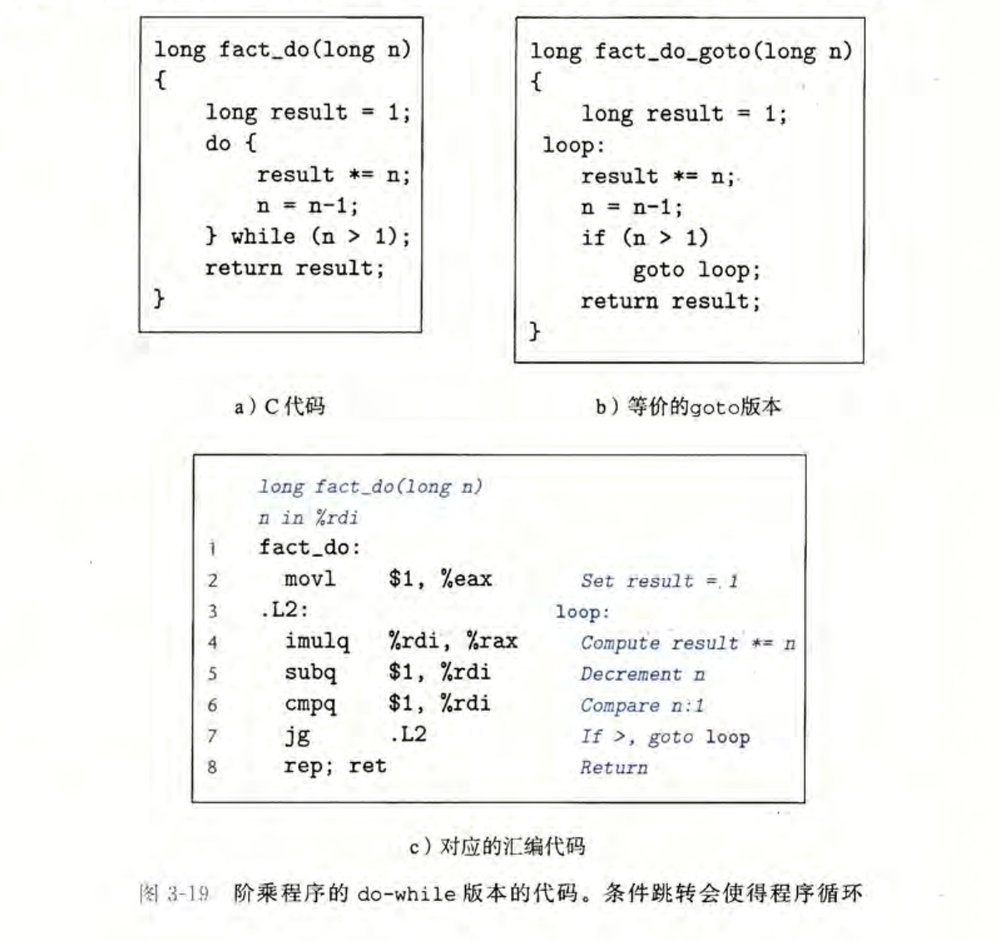
switch
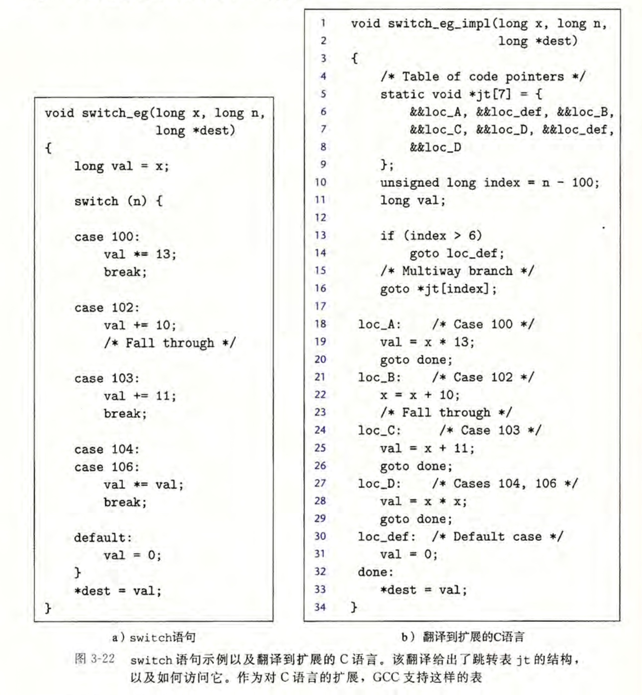
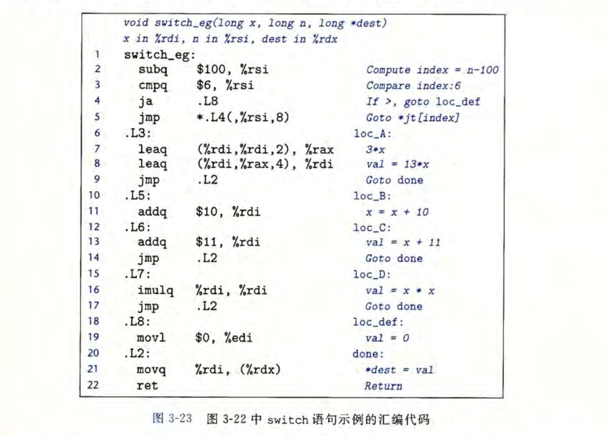
过程
运行时栈
过程的栈帧(stack frame):当x86-64过程需要的存储空间超出寄存器能够存放的大小时，就会在栈上分配空间。这个部分即为 过程的栈帧
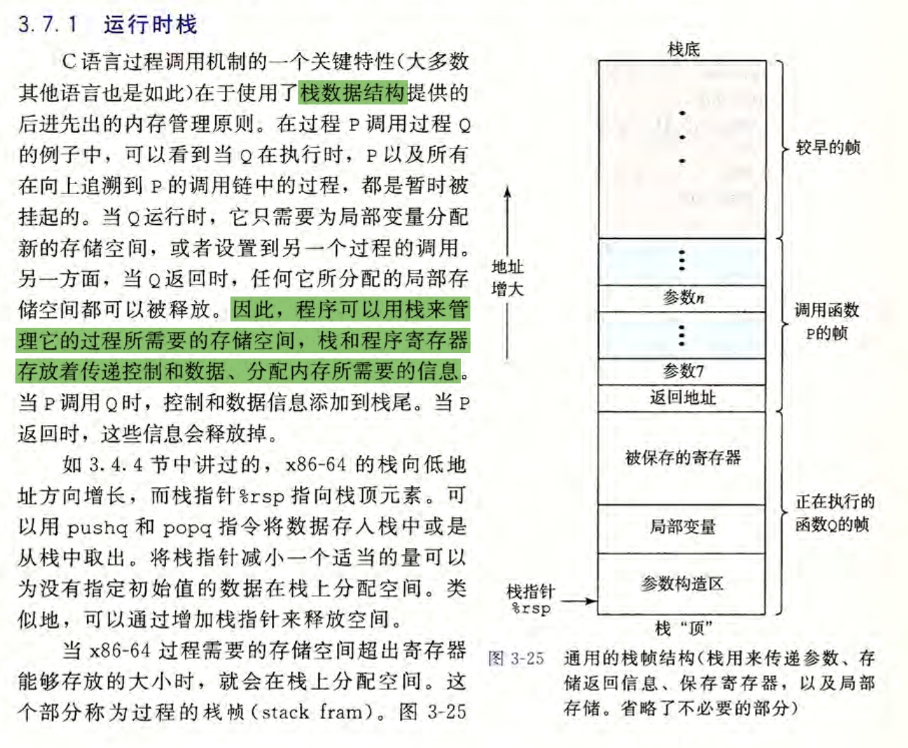
转移控制(函数P调用函数Q):
- 控制从函数P转移到函数Q: 只需简单地把程序计数器PC设置为Q的代码的起始位置
- 控制从函数Q返回到函数P: 处理器必须记录好它要继续P的执行的代码位置。在x86-64中，这个信息是用指令
callQ调用过程Q来记录。该指令会把地址A压入栈中，并将PC设置为Q的起始地址。压入的地址A被称为返回地址，是紧跟在call指令后面的那条指令的地址。对应的指令ret会从栈中弹出地址A，并把PC设置为A
| 指令 | 描述 |
|---|---|
| call Label | 过程调用 |
| call Operand | 过程调用 |
| ret | 从过程调用中返回 |
callq retq 后面多了q，只是为了强调这些是x86-64版本中的调用和返回，而不是IA32。在x86-64中，这两个版本(callq call,retq ret)可以互换
数据传送
在x86-64中，大部分过程间的数据传送是通过寄存器实现的
栈上的局部存储
局部数据必须存放在内存中的情况有:
1. 寄存器不足够存放所有的本地数据
2. 对一个局部变量世勇地址运算符'&',因此必须能够为它产生一个地址
3. 某些局部变量是数组或结构，因此必须能够通过数组或结构引起被访问到
寄存器中的局部存储空间
确保当一个过程(调用者)调用另一个过程(被调用者)时，被调用者不会覆盖调用者稍后会使用的寄存器值。为此，x86-64采用了一组统一的寄存器使用惯例，所有的过程(包括程序库)都必须遵循
按照惯例，寄存器%rbx、%rbp 和%r12~r15被划分为被调用者保存寄存器， Q必须保存这些寄存器的值，保证他们的值在Q返回到P时与Q被调用时是一样的。 Q保存一个寄存器的值不变，要么就是不去改变它；要么就是把原始值压入栈中，改变寄存器值，然后在返回前从栈中弹出旧值。
所有其他的寄存器，除了栈指针%rsp，都分类为调用者保存寄存器。意味着仁和函数都能修改他们。
指针运算
单操作数操作符'&'和'*'可以产生指针和间接引用指针
- 对于一个对象的表达式 Expr，&Expr是给出该对象的一个指针
- 对于一个地址的表达式 AExpr，*AExpr给出该地址处的值
因此表达式 Expr和 * &Expr是等价的。
可以对数组和指针应用数组下标操作。数组引用A[i]等同于表达式 *(A+i)。它计算第i个数组元素的地址，然后访问这个内存位置
假设整型数组E的起始地址和整数索引i分别存放在寄存器%rdx和%rcx中。下面是一些与E有关的表达式。还给出了每个表达式的汇编代码实现，结果存放在寄存器%eax(如果是数据)或寄存器%rax(如果是指针)中
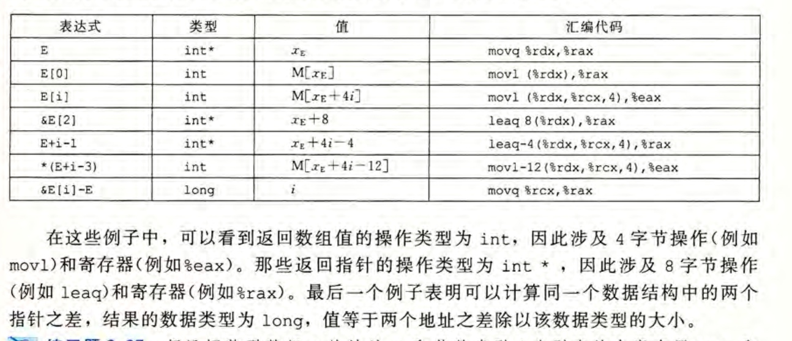
嵌套数组
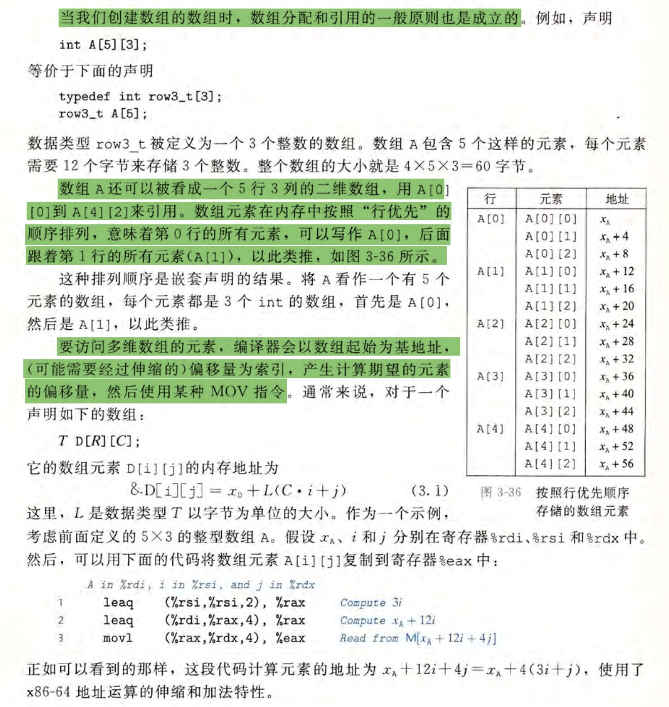
结构体
c语言的struct声明创建一个数据类型，将可能不同类型的对象聚合到一个对象中。用名字来引用结构的各个组成部分。类似于数组的实现，结构的所有组成部分都放在内存中一段连续的区域内，而指向结构的指针就是结构第一个字节的地址。编译器维护关于每个结构类型的信息，指示每个字段(field)的字节偏移，它以这些偏移作为内存引用指令中的位移，从而产生对结构元素的引用。
struct rect {
long llx;
long lly;
unsigned long width;
unsigned long height;
unsigned color;
}
// 这里传递一个指针给area函数
long area(struct rect *rp) {
return (*rp).width * (*rp).height;
// (*rp).width 等价于 rp->width
// return rp->width * rp->height;
}
联合
联合提供一种方式，能够规避C语言的类型系统，允许以多中类型来引用一个对象。联合声明的语法和结构的语法一样，只不过语义相差比较大。它们是用不同的字段来引用相同的内存块。
struct S3 {
char c;
int i[2];
double v;
};
union U3 {
char c;
int i[2];
double v;
};
数据对齐
许多计算机系统对基本数据类型的合法地址做出了一些限制，要求某种类型对象的地址必须是某个值K(通常是2、4或8)的倍数。这种对齐限制简化了行程处理器和内存系统之间接口的硬件设计。
2中对齐，一种是结构体中间填充，一种是结构体末尾填充
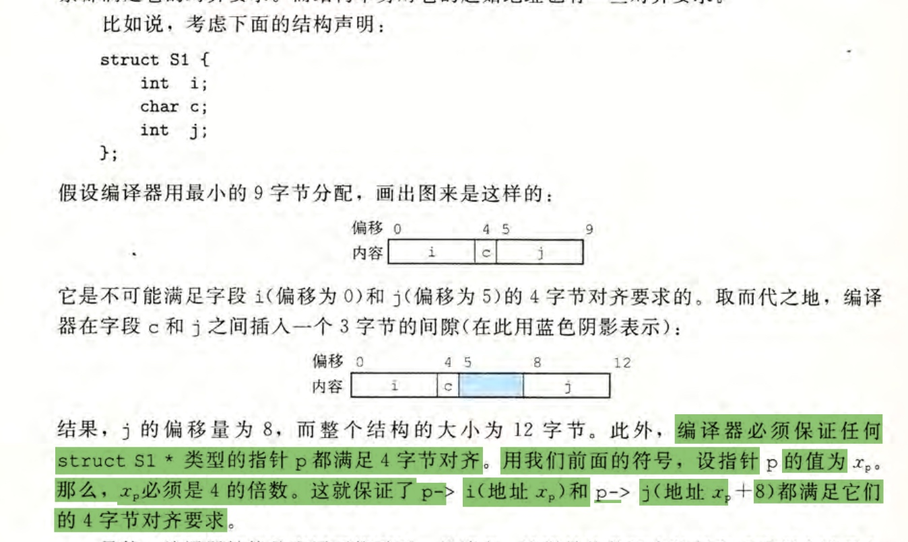
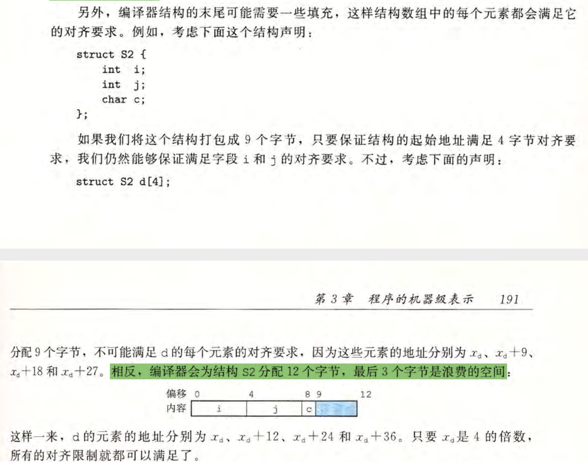
内存分配函数
- alloca
- malloc
- calloc
- realloc
理解指针
每个指针都对应一个类型
这个类型表名该指针指向的哪一类对象
int *ip 变量ip指向int类型对象的指针
char **cpp 变量cpp指向的对象自身就是一个指向char类型对象的指针
通常 如果对象类型为T，那么指针的类型为 T*,特殊的 void *类型代表通用指针
malloc函数返回一个通用指针，然后通过显示强制类型转换或赋值操作那样的隐式强制类型转换，将它转换成一个有类型的指针
指针类型不是机器代码的一部分，它们是c语言提供的一种抽象，帮助程序员避免寻址错误每个指针都有一个值
这个值是某个指定类型的对象的地址。特殊的NULL(0)值代表该指针没有指向任何地方
指针用'&'运算符创建
leaq指令是设计用来计算内存引用的地址，&运算符的机器代码实现常常用这条指令来计算表达式的值
*操作符用于间接引用指针
其结果是一个值，它的类型与该指针的类型一致。简介引用是用内存引用来实现的，要么是存储一个指定的地址，要么是从指定的地址读取
数组和指针紧密联系
一个数组的名字可以像一个指针变量一样引用。 比如数组引用 a[3]与指针预算和简介引用 *(a+3) 有一样的效果
将指针从一个类型强制转成另一种类型，只改变它的类型，而不改变它的值
强制类型转换的一个效果是改变指针运算的伸缩。 例如 P 是一个char *类型的指针，它的值为p，那么 表达式(int *)P+7 计算为p+28,而(int *)(P+7) 计算为p+7 (强制类型转换的优先级高于加法)
指针也可以指向函数
// 定义函数原型 int fun(int x, int *p); // 声明一个指针fp，将它赋值为这个函数 int (*fp)(int, int *) fp = fun; // 使用这个指针调用函数 int y = 1; int result = fp(3, &y); //函数指针的值是该函数机器代码表示中第一条指令的地址阅读函数指针 int (*f)(int *);
这里从("f"开始)往外读。因此，我们看到像 "(*f)"表名的那样，f是一个指针;
而 "(*f)(int *)" 表明f是一个指向函数的指针，这个函数以一个 int * 作为参数；
最后，我们看到f是以 int * 为参数，并返回 int 的函数指针
*f 两边的括号是必须的，否则声明 int *f(int *) 会被误解为 (int *)f(int *)， 声明 入参为 int *，出参为 int * 的函数f原型蠕虫和病毒
蠕虫(worm): 可以自己运行，并且能够将自己的等效副本传播到其他机器
病毒(virus): 能将自己添加到包括操作系统在内的其他程序中，但它不能独立运行
对砍缓冲区溢出攻击 的 3种方法
1.地址空间布局随机化
为了在系统中插入攻击代码，攻击者既要插入代码，也要插入指向这段代码的指针，这个指针也是攻击字符串的一部分。 产生这个指针需要知道这个字符串放置的站地址。程序的栈地址非常容易预测，对于所有运行同样程序和操作系统版本的系统来说，在不同的机器之间，栈的位置是相当固定的，故系统系统都容易受到同一种病毒的攻击，这种现象被称作 `安全单一化(security monoculture)`
为了解决这个问题， 栈随机化思想使得栈的位置在程序每次运行时都有变化。 实现方式是: 程序开始时，在栈上分配一段 0~n字节之间的随机大小的空间。 后续每次 alloca 空间时，都是从 n 直接后开始分配。这样栈地址就发生变化
在linux中，栈随机化已经变成了标准行为，它是更大一类技术 地址空间布局随机化(Address-Space Layout Randomization) ASLR 中的一种。 采用ASLR，每次运行时程序的不同部分，包括程序代码、库代码、栈、全局变量和堆数据，都会被加载到内存的不同区域
但是这种方法还可以被蛮力克服，攻击者反复地用不通的地址进行攻击。常见的方法是在实际的攻击代码前插入很长一段的 nop (no operatioin)指令，这种指令的功能只是对程序计数器加一。只要攻击者能猜中这段序列中的某个地址，程序就会经过这个序列，到达攻击代码。这个序列常用的术语是空操作雪橇(nop sled)，意思是程序会划过这个序列。 若我们建立一个256字节的nop sled，那么枚举 215 = 32768个其实地址，就能破解 n=223 的随机化。对于64位，要尝试枚举 224 = 16777216 次
2. 栈的破坏检测
gcc在产生的代码中加入栈保护者(stack protector)机制，来检测缓冲区越界。 思想是在栈帧中仁和局部缓冲区与栈状态质检存储一个特殊的金丝雀(canary)的值,也被称为哨兵值，是程序每次运行时随机产生的，因此攻击者没有简单办法能知道它是什么。在恢复寄存器状态和从函数返回之前，程序检查这个金丝雀值是否被该函数的某个操作或该函数调用的某个函数的某个操作改变了， 如果是，程序异常终止
3. 限制可执行代码区域
限制哪些内存区域能够存放可执行代码。在典型的程序中，只有保存编译器产生的代码的那部分内存才需要时可执行的，其它部分可以被限制为只读或写。
虚拟内存空间在逻辑上分成了页(page)，每个页是2048或4096个字节。
以前x86体系结构将读和执行访问控制合并当成一个1位的标志，这样任何被标记为可读的页也都是可执行的。有另外的机制可以限制页可读但不可执行，然而这些机制会带来严重 的性能损失
最近，AMD为它的64位处理器的内存保护引入"NX"(No-Execute,不执行)位，将读和执行访问模式分开，intel也跟进了。有了这个特性，栈可以被标记为可读和可写，但不可执行，而检查页是否可执行由硬件来完成，效率上没有损失
有些类型的程序要求动态产生和执行代码的能力。例如 即使(just-in-time)编译技术为解释语言(例如java)编写的程序动态地产生代码， 一提高执行性能。是否能够将可执行代码限制在由编译器在创建原始程序时产生的那部分中，取决于语言和操作系统。
变长栈帧
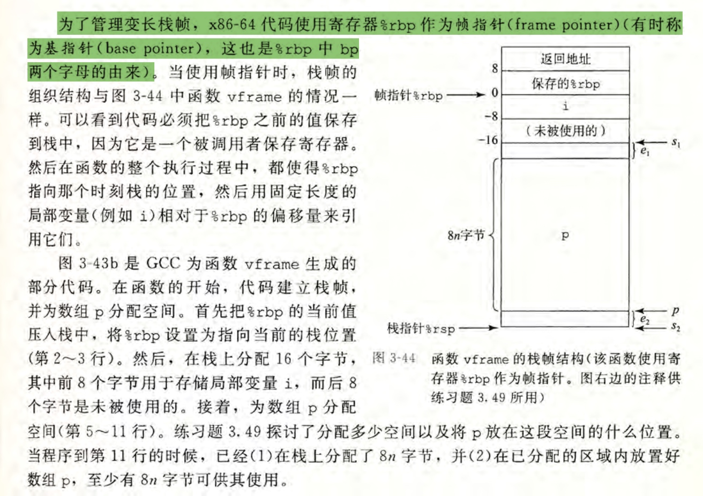
浮点数
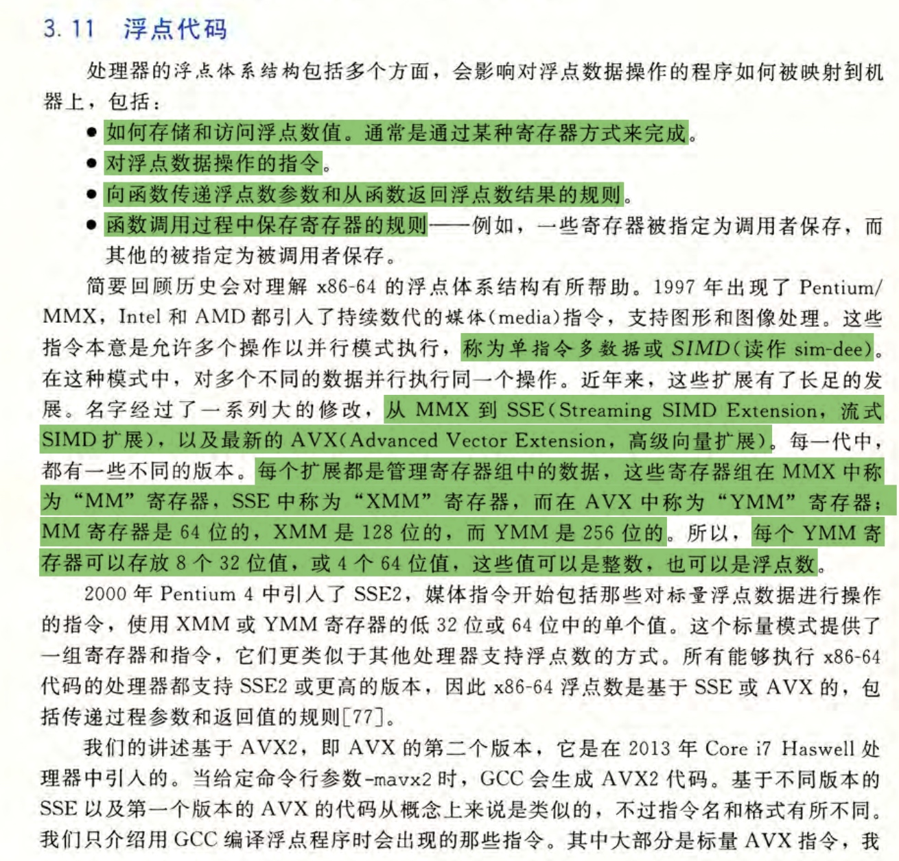